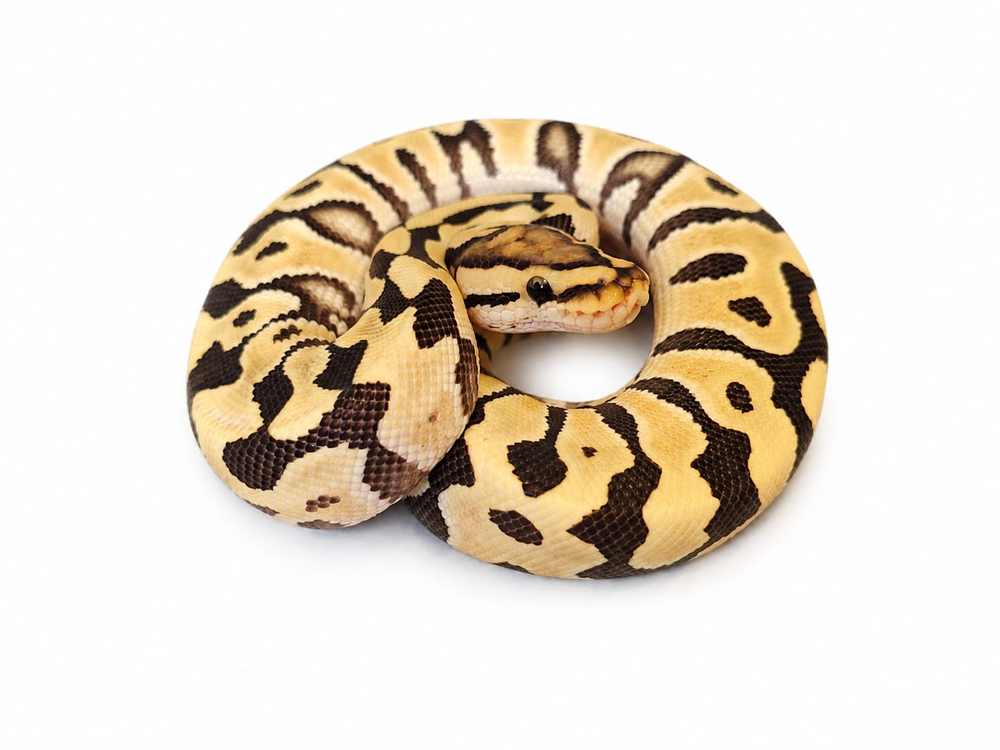

Especie: Ball Python
Sexo: Macho
Morph: Desert Ghost Krypton
Año: 2025
Peso: 180 g
Origen: CODE
Procedencia: PIMVS YAHUI by César Rico
Estado: Juvenil
Ejemplar seleccionado por la combinación Desert Ghost y Krypton, una de las expresiones visuales más limpias y sofisticadas dentro de la especie.
Desert Ghost elimina progresivamente los tonos oscuros o "sucios", aumentando el contraste y manteniendo colores brillantes incluso en ejemplares adultos.
Krypton es una combinación genética derivada de Clown y Cryptic, generando un patrón distintivo con líneas limpias, franjas amplias y un diseño cefálico muy característico.
Forma parte del Archivo Genético CODE como registro documental permanente.